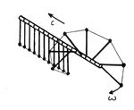
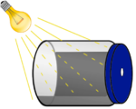

IYPT 2013 Problems
Problems for the 26th IYPT 2013
As decided by the IOC 2012-07-28, released 2012-08-01.
1. Invent yourself
It is more difficult to bend a paper sheet, if it is folded “accordion style” or rolled into a tube. Using a single A4 sheet and a small amount of glue, if required, construct a bridge spanning a gap of 280 mm. Introduce parameters to describe the strength of your bridge, and optimise some or all of them.
2. Elastic space
The dynamics and apparent interactions of massive balls rolling on a stretched horizontal membrane are often used to illustrate gravitation. Investigate the system further. Is it possible to define and measure the apparent “gravitational constant” in such a “world”?
3. Bouncing ball
If you hold a Ping-Pong ball above the ground and release it, it bounces. The nature of the collision changes if the ball contains liquid. Investigate how the nature of the collision depends on the amount of liquid inside the ball and other relevant parameters.

4. Soliton
A chain of similar pendula is mounted equidistantly along a horizontal axis, with adjacent pendula being connected with light strings. Each pendulum can rotate about the axis but can not move sideways (see figure). Investigate the propagation of a deflection along such a chain. What is the speed for a solitary wave, when each pendulum undergoes an entire 360º revolution?
5. Levitation
A light ball (e.g. a Ping-Pong ball) can be supported on an upward airstream. The airstream can be tilted yet still support the ball. Investigate the effect and optimise the system to produce the maximum angle of tilt that results in a stable ball position.
6. Coloured plastic
In bright light, a transparent plastic object (e.g. a blank CD case) can sometimes shine in various colours (see figure). Study and explain the phenomenon. Ascertain if one also sees the colours when various light sources are used.

7. Hearing light
Coat one half of the inside of a jar with a layer of soot and drill a hole in its cover (see figure). When light from a light bulb connected to AC hits the jar’s black wall, a distinct sound can be heard. Explain and investigate the phenomenon.
8. Jet and film
A thin liquid jet impacts on a soap film (see figure). Depending on relevant parameters, the jet can either penetrate through the film or merge with it, producing interesting shapes. Explain and investigate this interaction and the resulting shapes.
9. Carbon microphone
For many years, a design of microphone has involved the use of carbon granules. Varying pressure on the granules produced by incident sound waves produces an electrical output signal. Investigate the components of such a device and determine its characteristics.
10. Water rise
Fill a saucer up with water and place a candle vertically in the middle of the saucer. The candle is lit and then covered by a transparent beaker. Investigate and explain the further phenomenon.
11. Ball bearing motor
A device called a “Ball Bearing Motor” uses electrical energy to create rotational motion. On what parameters do the motor efficiency and the velocity of the rotation depend? (Take care when working with high currents!)
12. Helmholtz carousel
Attach Christmas tree balls on a low friction mounting (carousel) such that the hole in each ball points in a tangential direction. If you expose this arrangement to sound of a suitable frequency and intensity, the carousel starts to rotate. Explain this phenomenon and investigate the parameters that result in the maximum rotation speed of the carousel.
13. Honey coils
A thin, downward flow of viscous liquid, such as honey, often turns itself into circular coils. Study and explain this phenomenon.
14. Flying chimney
Make a hollow cylindrical tube from light paper (e.g. from an empty tea bag). When the top end of the cylinder is lit, it takes off. Explain the phenomenon and investigate the parameters that influence the lift-off and dynamics of the cylinder.
15. Meniscus optics
Cut a narrow slit in a thin sheet of opaque material. Immerse the sheet in a liquid such as water. After removing the sheet from the liquid, you will see a liquid film in the slit. Illuminate the slit and study the resulting pattern.
16. Hoops
An elastic hoop is pressed against a hard surface and then suddenly released. The hoop can jump high in the air. Investigate how the height of the jump depends on the relevant parameters.
17. Fire hose
Consider a hose with a water jet coming from its nozzle. Release the hose and observe its subsequent motion. Determine the parameters that affect this motion.
Authors of the original proposals: Ivan Antsipau, John Balcombe, Samuel Byland, Jürgen Durst, Łukasz Gładczuk, Gavin Jennings, Heinz Kabelka, Rudolf Lehn, Maciej Malinowski, Ilya Martchenko, Björn Miksch, Florian Ostermaier, Stanisłaŭ Piatruša, Martin Plesch, Qian Sun, Hassan Bagheri Vloujerdi.
The selection of problems was prepared and suggested on July 12, 2012 by the IYPT Committee for Problem Selection (John Balcombe, Samuel Byland, Ilya Martchenko, Feng Song.) The problems were discussed, edited and approved by the IYPT IOC on July 28, 2012.
Pictures:
- “Soliton” © 2012 Andrei Klishin
- “Coloured plastic” © 2012 Evgeny Oleinik
- “Hearing light” © 2012 Kathryn Zealand, QOTU
- “Jet and film” © 2012 Stanisłaŭ Piatruša
References
Below, find a link to supporting materials concerning the problems.
These materials are provided by independent persons or organizations, for the benefit of everyone who is interested. If you want your material listed here, contact the Executive Committee.
The IYPT wants to stress that any information found on any of these sites shall in no way be considered binding and authoritative.
We kindly remind all readers that the IYPT guidelines clearly stand for standard scientific conduct and proper procedures for citing material that is not one’s own work, while the grading has a focus on the novelty and consistency of the original research results presented.
- IYPT Reference Kit 2013 by Ilya Martchenko et al.